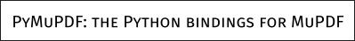

TextWriter#
新功能 v1.16.18
此类表示 MuPDF 文本 对象。基本思想是 解耦 (1) 文本准备和 (2) 文本输出 到 PDF 页面。
在 准备阶段，文本写入器存储任意数量的文本片段（“跨度”），并附带其位置和各自的字体信息。输出 可以多次发生，且每次输出到具有兼容页面大小的 PDF 页面。
文本写入器是 Page.insert_text() 等方法的优雅替代方案：
改进的文本定位： 选择插入文本的起始点。存储文本后，返回的是该跨度的 最后一个字符 后的位置（光标位置）。
自由选择字体： 每个文本跨度都有自己的字体和
fontsize。这使得在组合大量文本时，轻松切换字体。自动回退字体： 如果选定的字体不支持某个字符，将自动搜索替代字体。这显著降低了在输出中看到无法打印符号（“TOFU”——看起来像一个小矩形）的风险。PyMuPDF 现在还带有 通用字体 “Droid Sans Fallback Regular”，支持 所有拉丁字符 （包括西里尔字母和希腊字母），以及 所有 CJK 字符 （中文、日文、韩文）。
西里尔字母和希腊字母支持： PDF Base 14 字体 集成了对西里尔字母和希腊字母的支持 无需指定编码。您的文本可以是拉丁字母、希腊字母和西里尔字母的混合。
透明度支持： 参数 opacity 被支持。这为创建水印样式的文本提供了便捷方式。
对齐文本： 支持任何字体——不仅仅是
Page.insert_textbox()中的简单字体。可重用性： TextWriter 对象独立于 PDF 页面存在。它可以多次写入，无论是到相同页面还是其他页面，选择不同的颜色或透明度。
使用此对象涉及三个步骤：
在 创建 时，TextWriter 需要一个固定的 页面矩形，并基于该矩形计算文本位置。TextWriter 仅能写入该大小的页面。
使用
TextWriter.append()、TextWriter.appendv()和TextWriter.fill_textbox()方法存储文本，按需多次存储。在某些 PDF 页面上输出 TextWriter 对象。
备注
从 v1.17.0 开始，TextWriters 支持 通过
TextWriter.write_text()的 morph 参数旋转文本。还有
Page.write_text()方法，它将一个或多个 TextWriter 组合并将它们联合写入给定矩形和旋转角度——类似于Page.show_pdf_page()。
类 API
- class TextWriter#
- __init__(self, rect, opacity=1, color=None)#
- 参数:
rect (rect-like) – 内部用于文本定位计算的矩形。
opacity (float) – 设置文本透明度。值应在
[0, 1)区间外的将被忽略。例如，0.5 代表 50% 的透明度。color (float,sequ) – 文本的颜色。所有颜色都通过浮动值指定，范围 0 <= color <= 1。单个浮动值表示灰度级，序列表示色彩空间通过其长度。
- append(pos, text, font=None, fontsize=11, language=None, right_to_left=False, small_caps=0)#
在 v1.18.9 中更改
在 v1.18.15 中更改
以水平写入模式添加新的文本。
- 参数:
pos (point_like) – 文本的起始位置，即第一个字符的左下角。
text (str) – 任意长度的字符串。文本将从位置 “pos” 开始写入。
font – 一个 Font 对象。如果省略，使用
pymupdf.Font("helv")。fontsize (float) –
fontsize，正数，默认为 11。language (str) – 使用的语言，例如 “en” 表示英文。有效值应符合 ISO 639 标准 1、2、3 或 5。预留待用：目前没有效果。
right_to_left (bool) – (在 v1.18.9 中新增) 是否按从右到左的顺序写入文本。适用于阿拉伯语或希伯来语等语言。默认为 False。若为 True，文本中的任何拉丁部分将自动转换。没有其他效果，即
TextWriter.last_point仍然是最右边的字符，并且不会进行对齐。因此，您可能需要使用TextWriter.fill_textbox()代替。small_caps (bool) –
(在 v1.18.15 中新增) 如果字体中有小型大写字母，则使用该字形。否则将使用原始字符（该字体或回退字体）。回退字体永远不会返回小型大写字母。例如，以下代码片段:
>>> doc = pymupdf.open() >>> page = doc.new_page() >>> text = "PyMuPDF: the Python bindings for MuPDF" >>> font = pymupdf.Font("figo") # 选择带小型大写字母的字体 >>> tw = pymupdf.TextWriter(page.rect) >>> tw.append((50,100), text, font=font, small_caps=True) >>> tw.write_text(page) >>> doc.ez_save("x.pdf")
将生成以下 PDF 文本：

- 返回:
text_rect和last_point。(在 v1.18.0 中更改:) 如果字体不支持，将引发异常——通过Font.is_writable检查。
- appendv(pos, text, font=None, fontsize=11, language=None, small_caps=0)#
在 v1.18.15 中更改
以垂直、从上到下的写入模式添加新文本。
- 参数:
- 返回:
text_rect和last_point。(在 v1.18.0 中更改:) 如果字体不支持，将引发异常——通过Font.is_writable检查。
- fill_textbox(rect, text, *, pos=None, font=None, fontsize=11, align=0, right_to_left=False, warn=None, small_caps=0)#
在 v1.17.3 中更改: 新增
pos参数指定开始写入的矩形位置。在 v1.18.9 中更改: 返回不适合矩形的行的列表。支持右到左写入（如阿拉伯文、希伯来文）。
在 v1.18.15 中更改: 如果字体支持，优先使用小型大写字母。
以水平写入模式填充给定矩形中的文本。这是作为
append()的替代方法的便捷方法。- 参数:
rect (rect_like) – 要填充的区域。文本不会超出此区域。
text (str,sequ) – 文本。可以是（UTF-8）字符串或字符串的列表/元组。字符串将首先通过 splitlines() 转换为列表。每个列表项将从新的一行开始（强制换行）。
pos (point_like) – (v1.17.3 中新增) 在此点开始存储。默认是在矩形的左上角附近。
font – Font，默认为
pymupdf.Font("helv")。fontsize (float) –
fontsize。align (int) – 文本对齐。使用 TEXT_ALIGN_LEFT、TEXT_ALIGN_CENTER、TEXT_ALIGN_RIGHT 或 TEXT_ALIGN_JUSTIFY。
right_to_left (bool) – (在 v1.18.9 中新增) 是否按从右到左写入文本。适用于阿拉伯文或希伯来文等语言。默认为 False。如果为 True，任何拉丁部分将自动反转。你仍然需要设置对齐方式（如果你想要右对齐），它不会自动发生——其他对齐选项仍然可用。
warn (bool) – 如果文本溢出，什么都不做、警告或引发异常。溢出的文本将不会写入。在 v1.18.9 中更改：
默认值为 None。
将返回溢出的行列表。
- 参数:
small_caps (bool) – (在 v1.18.15 中新增) 见
append()。- 返回类型:
list
- 返回:
在 v1.18.9 中新增——未适配矩形的行的列表。每个项是一个元组
(text, length)，其中包含字符串及其长度（在页面上）。
备注
按需多次使用这些方法——没有技术限制（除非系统的内存限制）。你也可以混合使用
append()和文本框，且可以同时使用两者。文本定位完全由插入点控制。因此，没有必要遵循任何顺序。(在 v1.18.0 中更改:) 如果字体不支持，将引发异常——通过Font.is_writable检查。- write_text(page, opacity=None, color=None, morph=None, overlay=True, oc=0, render_mode=0)#
将 TextWriter 文本写入页面，页面是唯一必填参数。其他参数可用来临时覆盖创建 TextWriter 时使用的值。
- 参数:
page – 写入此 Page。
opacity (float) – 覆盖 TextWriter 的透明度值。
color (sequ) – 覆盖 TextWriter 的颜色值。
morph (sequ) – 通过应用矩阵修改文本外观。如果提供，它必须是一个序列 (fixpoint, matrix)，其中 fixpoint 为类似点的值，matrix 为类似矩阵的值。一个典型示例是围绕 fixpoint 旋转文本。
overlay (bool) – 放在前景（默认）还是背景。
render_mode (int) –
PDF 的
Tr操作符值。值：0（默认）、1、2、3（不可见）。
- opacity#
文本的透明度（可修改）。
- 返回类型:
float
- color#
文本的颜色（可修改）。
- 返回类型:
float,tuple
备注
要查看一些处理 TextWriter 的示例脚本，请查看 this 仓库。
透明度和颜色适用于 此对象中的所有文本。
如果需要不同的颜色/透明度，必须创建一个单独的 TextWriter。每当您确定颜色应更改时，只需使用先前返回的
last_point作为新文本跨度的位置，将文本附加到相应的 TextWriter 中。项目或文本框的附加可以按任意顺序进行：只有位置参数控制文本出现的地方。
字体和
fontsize在同一 TextWriter 中可以自由变化。这可以让不同属性的文本出现在同一行上：只需相应地指定 pos，例如将其设置为先前添加项的last_point。您可以使用
TextWriter.fill_textbox()的 pos 参数设置第一个文本字符的位置。这允许从不同的 TextWriter 对象填充相同的文本框，从而允许使用多种颜色、透明度等。MuPDF 不支持所有字体的此功能，例如不支持 Type3 字体。从 v1.18.0 开始，可以通过字体属性
Font.is_writable检查此问题。当使用 TextWriter 方法时，该属性也会被检查。
New in v1.16.18
This class represents a MuPDF text object. The basic idea is to decouple (1) text preparation, and (2) text output to PDF pages.
During preparation, a text writer stores any number of text pieces (“spans”) together with their positions and individual font information. The output of the writer’s prepared content may happen multiple times to any PDF page with a compatible page size.
A text writer is an elegant alternative to methods Page.insert_text() and friends:
Improved text positioning: Choose any point where insertion of text should start. Storing text returns the “cursor position” after the last character of the span.
Free font choice: Each text span has its own font and
fontsize. This lets you easily switch when composing a larger text.Automatic fallback fonts: If a character is not supported by the chosen font, alternative fonts are automatically searched. This significantly reduces the risk of seeing unprintable symbols in the output (“TOFUs” – looking like a small rectangle). PyMuPDF now also comes with the universal font “Droid Sans Fallback Regular”, which supports all Latin characters (including Cyrillic and Greek), and all CJK characters (Chinese, Japanese, Korean).
Cyrillic and Greek Support: The PDF Base 14 字体 have integrated support of Cyrillic and Greek characters without specifying encoding. Your text may be a mixture of Latin, Greek and Cyrillic.
Transparency support: Parameter opacity is supported. This offers a handy way to create watermark-style text.
Justified text: Supported for any font – not just simple fonts as in
Page.insert_textbox().Reusability: A TextWriter object exists independent from PDF pages. It can be written multiple times, either to the same or to other pages, in the same or in different PDFs, choosing different colors or transparency.
Using this object entails three steps:
When created, a TextWriter requires a fixed page rectangle in relation to which it calculates text positions. A text writer can write to pages of this size only.
Store text in the TextWriter using methods
TextWriter.append(),TextWriter.appendv()andTextWriter.fill_textbox()as often as is desired.Output the TextWriter object on some PDF page(s).
备注
Starting with version 1.17.0, TextWriters do support text rotation via the morph parameter of
TextWriter.write_text().There also exists
Page.write_text()which combines one or more TextWriters and jointly writes them to a given rectangle and with a given rotation angle – much likePage.show_pdf_page().
Method / Attribute |
Short Description |
|---|---|
Add text in horizontal write mode |
|
Add text in vertical write mode |
|
Fill rectangle (horizontal write mode) |
|
Output TextWriter to a PDF page |
|
Text color (can be changed) |
|
Last written character ends here |
|
Text opacity (can be changed) |
|
Page rectangle used by this TextWriter |
|
Area occupied so far |
Class API
备注
To see some demo scripts dealing with TextWriter, have a look at this repository.
Opacity and color apply to all the text in this object.
If you need different colors / transparency, you must create a separate TextWriter. Whenever you determine the color should change, simply append the text to the respective TextWriter using the previously returned
last_pointas position for the new text span.Appending items or text boxes can occur in arbitrary order: only the position parameter controls where text appears.
Font and
fontsizecan freely vary within the same TextWriter. This can be used to let text with different properties appear on the same displayed line: just specify pos accordingly, and e.g. set it tolast_pointof the previously added item.You can use the pos argument of
TextWriter.fill_textbox()to set the position of the first text character. This allows filling the same textbox with contents from different TextWriter objects, thus allowing for multiple colors, opacities, etc.MuPDF does not support all fonts with this feature, e.g. no Type3 fonts. Starting with v1.18.0 this can be checked via the font attribute
Font.is_writable. This attribute is also checked when using TextWriter methods.